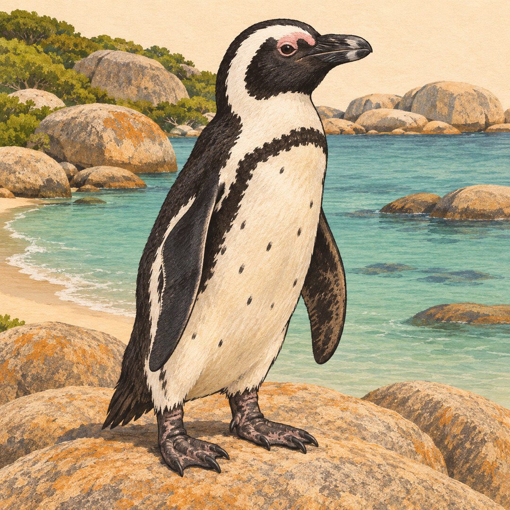

NP Labs · NIST TREC 2026
Select the evidence,
then write
We turned research requests into short English reports with citations. We used the organizers’ search endpoint and supplied translations, then reranked articles and extracted claims to guide each report.

From a penguin query to a cited report
Follow one News24 article from its search rank to the submitted report, then see how AutoARGUE scored it.
Video transcript
At TREC RAGTIME 2026, NP Labs turned multilingual news into short English reports with citations. One topic asked how African penguin populations changed and what could protect them.
DeepSeek produced eight English queries. One looked for conservation measures and fishing restrictions. The organizers’ search returned 100 hits per query across English, Spanish, Russian, and Chinese.
Mixedbread reranked the English article text. News24 rose from sixteenth to first for the fishing query. We selected 24 distinct articles across the ranked lists and kept 19 extracted claims for this topic.
The supported claims guided GPT-5.6 Sol. The report cited News24 for a 2008 experiment. The study found that fishing restrictions slowed annual population decline from about 7% to 5%.
For this topic, AutoARGUE supported all 36 citations and credited 10 of 16 reference nuggets. Selected articles contained all six missing details. All six were absent from the candidates Nuggetizer returned. News24 gave an estimate of 13,200 breeding pairs in 2019 that the report missed.
Across 34 topics, preliminary AutoARGUE scored our citation support at 95.73%. The report set covered 39.16% of reference nuggets across those same topics.
How the report is built
-
Plan queries
DeepSeek turns the request and requester background into one broad query and several focused queries, all in English.
-
Search and rerank
We request 100 hits per query from the organizers’ four-language index. We rerank English originals and supplied translations with Mixedbread.
-
Extract nuggets
Select up to 24 distinct articles round-robin. Nuggetizer extracts claims and labels article support. We merge similar claims and retain up to 20.
-
Write and cite
Claims with full support guide GPT-5.6 Sol. The final report is capped at 5,000 characters and cites original article IDs.
Preliminary organizer results
We submitted one run, np-nugget-sol-v1, with 103 topic records. AutoARGUE scored 34 topics automatically. The mostly-human assessment used human judgments where available and AutoARGUE judgments to fill gaps on 17 of those topics.
| Measure | AutoARGUE34 topics · Micro | Mostly human17 topics · LLM-filled |
|---|---|---|
| Citation support | 95.73% | 93.72% |
| Nugget coverage | 39.16% | 43.43% |
| F1 | 55.59% | 57.15% |
Citation support measures whether each cited article backs its sentence. Nugget coverage measures the share of organizer reference facts the report addresses. Our citation support matched the reported maximum across 29 runs in each evaluation.